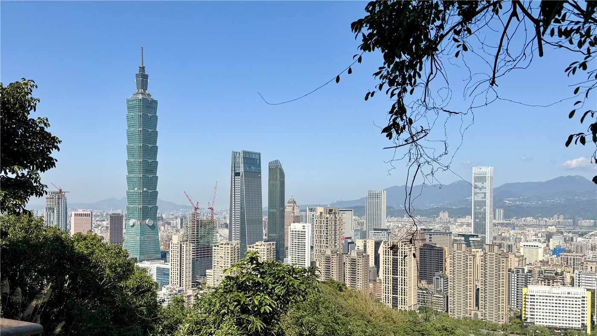

글로벌 기후 회복력 순위서 타이베이 하위권… 열섬과 배수 용량이 지목
국제 언론이 보도한 도시 기후 회복력 비교에서 타이베이가 하위권에 자리했다. 여름철 고온 지속과 단시간 집중호우에 대한 배수 용량이 주요 감점 요인으로 꼽혔다.
손승종 기자 · 2026.09.10
橋대만

국제 언론이 보도한 도시 기후 회복력 비교 자료에서 타이베이가 하위권에 자리한 것으로 나타났다. 해당 자료는 여러 도시의 폭염과 침수 대응 역량을 지표화한 것이다.
광고 문의 · 300×250지목된 요인은 크게 두 가지다. 여름철 고온이 오래 지속되는 열섬 현상과, 단시간 집중호우가 내렸을 때의 배수 용량이다.
분지 지형이라는 조건
타이베이는 사방이 산으로 둘러싸인 분지에 자리해 있어 열이 빠져나가기 어려운 구조다. 낮 동안 축적된 열이 밤에도 충분히 식지 않으면 열대야가 길어지고, 이는 냉방 수요와 전력 부하로 이어진다.
배수 측면에서도 분지 지형은 불리하다. 도심으로 흘러든 물이 빠져나갈 출구가 제한적이어서, 펌프 용량과 저류 시설이 침수 여부를 좌우한다.
순위를 읽을 때 유의할 점
이런 국제 비교는 지표 선정에 따라 순위가 크게 달라진다. 재난 대응 체계나 하수 시설 투자 실적을 어떤 가중치로 반영하느냐에 따라 같은 도시의 평가가 뒤바뀌기도 한다.
실제로 타이베이는 하수 배수 시설과 펌프장 투자에서 아시아 도시 가운데 이른 시기에 대규모 개선을 진행한 편에 속한다. 순위가 낮다는 사실 자체보다, 어떤 항목에서 낮은지를 보는 편이 유용하다.
시 당국은 관련 자료의 산정 방식을 확인하겠다는 입장이다. 도시 단위의 기후 대응 계획은 이미 진행 중이며, 녹지 확충과 저류 시설 확대가 포함돼 있다.
출처·참고 (사실 확인용 — 본문은 직접 재작성)
· https://news.ltn.com.tw/news/life/breakingnews/
· https://news.ltn.com.tw/news/life/breakingnews/